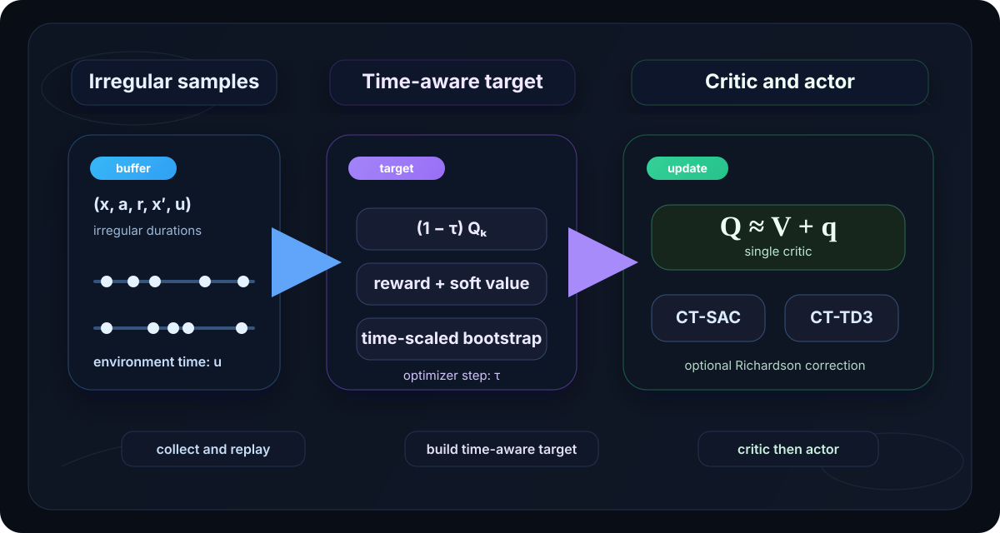

Algorithm
The formulation page explains why continuous-time RL needs a Hamiltonian flow and a local advantage-rate signal. Here we focus on how to turn those ideas to practical critic targets, actor updates, and deterministic or Richardson-style variants.

Algorithmic pipeline
Collect irregular transitions
Store tuples $(x,a,r,x',u)$ in an off-policy replay buffer. The duration $u$ is part of the sample and can vary substantially across the batch.
Build a continuous-time critic target
Instead of a fixed-step Bellman backup, use a target that mixes reward, policy-averaged soft value, and a bootstrap term scaled by the observed holding time.
Represent both $V$ and $q$ with one critic
The practical parameterization is $Q(x,a)\approx V(x)+q(x,a)$, so a single network carries both value-like and advantage-rate information.
Update the actor from the critic
For CT-SAC the policy is improved toward a Boltzmann distribution induced by the critic; CT-TD3 replaces this with a deterministic actor and twin critics.
Single-critic implementation
We use a single critic of the form:
Near the improved policy, the advantage-rate is often small, so $Q_k(x,a)$ behaves almost like a state-value predictor on-policy, but still retains action discrimination off-policy.
CT-SAC critic target
Writing $\tilde Q_k(x,a):=Q_k(x,a)-\alpha\log\pi(a\mid x)$ and $\gamma=e^{-\beta u}$, the single-critic update takes the form:
The critic target now depends explicitly on the observed duration $u$, so the method can train on batches that mix many short and large holding times without forcing everything into the same discrete-time step.
Fast-update view
For implementation, it is often convenient to separate the "new information" part of the critic target from the mixing step. Define:
Then the update can be written as:
This presentation makes the connection to standard deep RL implementations easier to see: the second line is a weighted interpolation step, while the first line isolates the actual continuous-time target. When $u=1$, the update resembles a discrete-time critic target much more closely.
CT-SAC algorithm
Data collection
Roll out the current stochastic policy, collect $(x,a,r,x',u)$, and store transitions in an off-policy replay buffer. The duration $u$ is kept explicitly instead of being absorbed into a nominal step.
Critic regression
Use mini-batches to fit the single critic against the continuous-time target above. This is the main place where the formulation becomes a scalable algorithm.
Actor improvement
Update the stochastic policy toward $\pi_\phi(a\mid x)\propto \exp(Q_\theta(x,a)/\alpha)$, giving a soft continuous-time analogue of SAC.
CT-TD3 algorithm
We also give a deterministic variant of CT-SAC named CT-TD3 that mirrors discrete-time TD3 directly. CT-TD3 keeps the same irregular-time critic logic but replaces the stochastic actor with a deterministic policy $\mu_\phi$, uses twin critics, adds target policy smoothing, and delays actor updates.
CT-TD3 full algorithm
Target policy smoothing. Use $$\tilde a'=\mu_{\bar\phi}(x')+\epsilon',\qquad \epsilon'\sim \mathrm{clip}\big(\mathcal N(0,\sigma_{\mathrm{targ}}^2I),-c,c\big).$$
Clipped double-$Q$ bootstrap. Form $$\bar Q_{\bar\theta}(x',\tilde a'):=\min\{Q_{\bar\theta_1}(x',\tilde a'),\,Q_{\bar\theta_2}(x',\tilde a')\}.$$
Critic target. For each critic, $$\begin{aligned} y_i:=&(1-\tau)Q_{\bar\theta_i}(x,a) +\tau\,\bar Q_{\bar\theta}\big(x,\mu_{\bar\phi}(x)\big) +\tau\,r\\ &+\tau\,\frac{\gamma\,\bar Q_{\bar\theta}(x',\tilde a')-\bar Q_{\bar\theta}(x,\mu_{\bar\phi}(x))}{u}. \end{aligned}$$
Actor update. Every $d$ steps, update the deterministic actor through the gradient of $Q_{\theta_1}(x,a)$ evaluated at $a=\mu_\phi(x)$.
Richardson variant
We also have a corrected single-critic update based on the Richardson rate estimator. The goal is not to change the overall training loop, but to improve the short-horizon approximation used inside the critic target.
Define the policy-averaged soft value functional:
Together with the Richardson critic decomposition:
The resulting Richardson-corrected update is:
where $\gamma=e^{-\beta u}$ and $\gamma_{1/2}=e^{-\beta u/2}$. This variant is more accurate in $u$ under smoother assumptions, and directly links to the stronger convergence on the theory page.
Notes
$u$ versus $\tau$
$u$ comes from the environment and may vary sample by sample. $\tau$ is the algorithmic step size controlling the critic/value flow update. Keeping them separate is essential.
Bridge to theory
The formulation page explains why the Hamiltonian flow is needed. This page explains how that idea becomes actual replay-buffer training targets, deterministic variants, and corrected short-horizon updates.